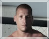

Professores
Pedro Galiza
- Faixa Preta Brazilian Jiu-jitsu 3 Grau
- Lutador de MMA
Luiz Eduardo "Lula" Guerreiro
- Preparador Físico especializado em MMA e Jiu-jitsu
- Treinador de atletas do UFC, Jungle Fight, Shooto e Capital Fight

Roberto Simões "Baiano"
- Tricampeão Baiano de Boxe
- Bicampeão Brasileiro de Boxe
- Participação no Campeonato Mundial de Boxe
Sandro Luiz
- Mestre Hapkido
- Hexacampeão Mundial de Hapkido
- Muay Thay - Técnico da Seleção Brasileira na Tailândia de 2009 a 2011
Edgar Santos
- Faixa Preta Brazilian Jiu-jitsu e Lutador de MMA
- 3 lugar na Copa do Mundo de Jiu-jitsu
- 3 lugar no Campeonato Brasileiro de Jiu-jitsu
- Campeão do Naga EUA
Cláudio Moreira
- Faixa Preta Brazilian Jiu-jitsu 3 Grau
- MMA Coach - 10 anos
- Árbitro Internacional de MMA
- Policial de Operações Especiais - 18 anos
- Bacharel em Direito e Psicologia